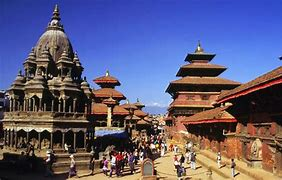

4 . Patan Durbar Square
|  |
| district |
Lalitpur |
| location |
patan, Kathmandu |
| date of established |
|
The next durbar square to be enlisted on the UNESCO’S world heritage site is Patan Durbar square, which lies at the central part of the beautiful city, Lalitpur.
The main attraction of this durbar square is the palace of Malla kings. As Kathmandu durbar square, Patan Durbar square is also rich in its own architectural framework that mainly represents the Newari architecture.
Besides, Newari culture, Patan is also the old cities of Buddhist, therefore Buddhist culture is also represented by the Durbar square. The history regarding the durbar square is not clear. Some give the credit of establishing the durbar square to the Malla kings, but some chronicles relate the history with the thakuri dynasty.
But the evidence of thakuri dynasty establishing the royal palace and making some of the reforms in the society is not supported with the sufficient evidence.
Therefore, the history is not clear lacking sufficient evidence though the pradhanascommunity relates the history with the malla reign as they resided around the durbar square area even before the malla reign. But scholars have made it clear with certainty that Patan was the prosperous city from ancient times only.
There are several temples and idols within the durbar square area and the main temples are built facing the western face of the palace. Similarly, the entrance of the temples faces towards the east i.e. towards the palace.